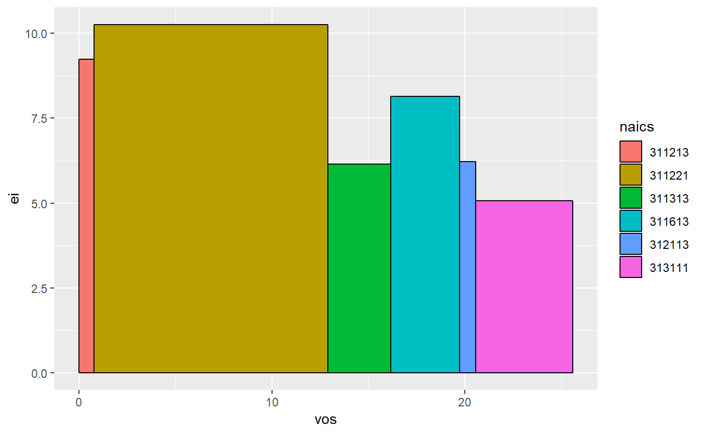
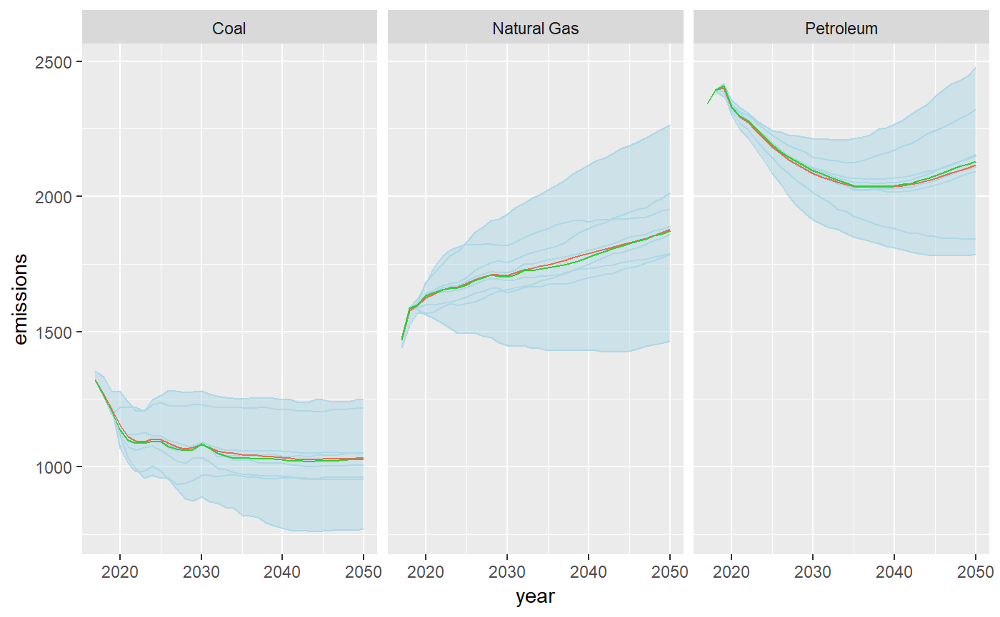
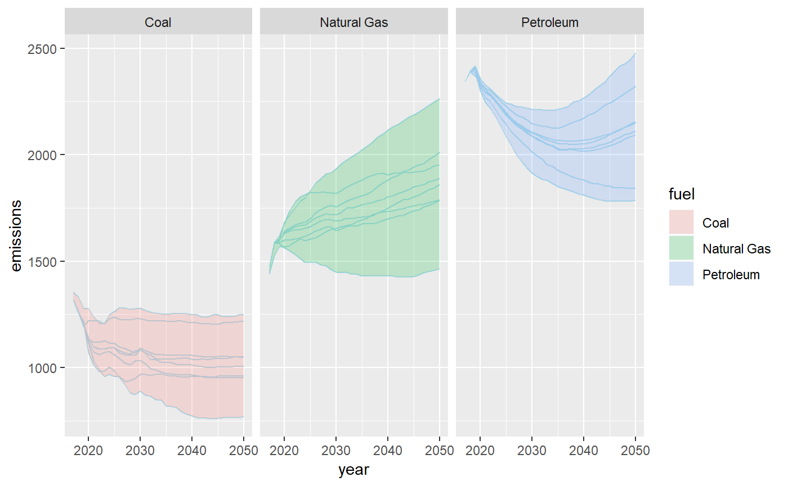
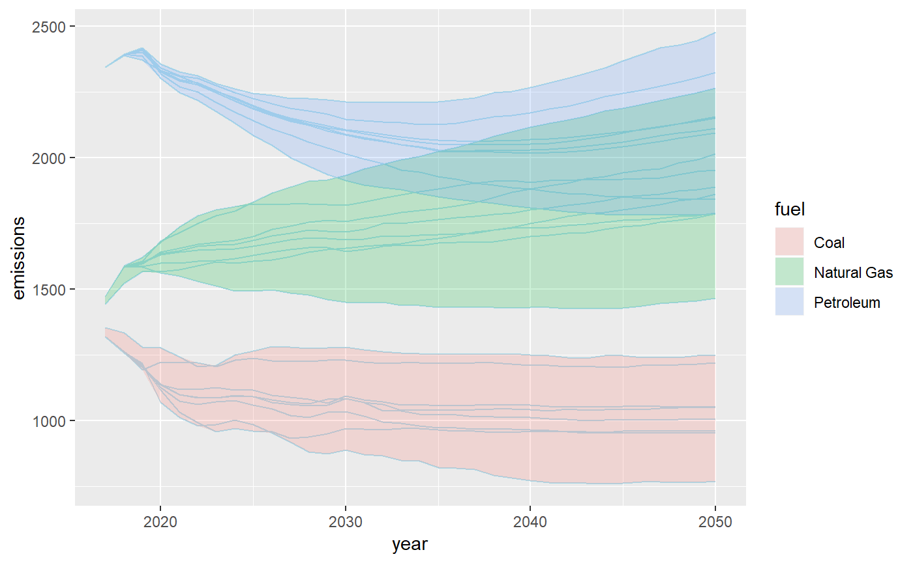

The goal of jplots is to provide some custom plot functions.
Installation
You can install the development version of jplots from GitHub with:
Example
The function geom_area_bar constructs variable-width bars. Unlike the width parameter to geom_bar, this treats the x axis as a numeric scale. For this reason there is no gap between the area_bars (as the gap would create offset on x-axis scale).
suppressPackageStartupMessages(library(ggplot2))
library(jplots)
ggplot(ei_ex,
aes(x = vos,
y = ei,
fill = naics)) +
geom_area_bar(color = "black")
There are also custom functions to create an “envelope” around a set of lines, as a way to summarize multiple series.
This version uses the envelope_fig function which constructs the entire plot:

However, this approach is not as flexible as using the official ggplot2 extension approach. The following approach extends geom_ribbon with a new function geom_envelope that calculates the minimum/maximum value of y at each value of x and draws an envelope around that range.
ggplot(aeo_ex,
mapping = aes(x = year,
y = emissions)) +
facet_grid(. ~ fuel) +
geom_line(aes(group = scenario),
color = "light blue") +
geom_envelope(aes(fill = fuel))
This approach allows re-mixing the geometry in different ways, e.g., without the facetting:
ggplot(aeo_ex,
mapping = aes(x = year,
y = emissions)) +
geom_line(aes(group = interaction(fuel, scenario)),
color = "light blue") +
geom_envelope(aes(fill = fuel, group = fuel))
One important detail: the line geom and the envelope geom have different groupings, so the group aesthetic will have to be specified in one or both geoms. The interaction function is useful to group by the interaction of two variables on the fly.